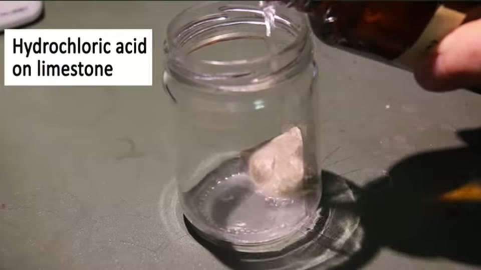

Curious Being
The Pyramid Chemical Plant Theory: Does the Science Actually Hold Up?
Tina · 29 min · watch on YouTube · summarised 2026-08-23
The hypothesis under examination belongs to another alternative researcher: that the Egyptian pyramids were an industrial network of chemical plants, each producing a different product. The Great Pyramid made sulphuric acid for ore processing, Khafre's made hydrochloric acid, the Red Pyramid ammonia, the Bent Pyramid ammonium bicarbonate fertiliser. Power came from telluric currents and lightning, stored in the limestone mass as though in a battery.
She was asked for her assessment and gives it in full. The answer is no, and the reasons are worked through one at a time.
The etymology, first
The theory leans on Kem — the land of Kemet — being the root of chemistry 02:17–02:45.
Her correction is short and checkable. Plutarch, writing in the 1st century AD, records Khēmia as a name for Egypt meaning land of black earth. Kem means blackness. Kemet, the black land, is the fertile Nile silt; Deshret, the red land, is the desert. The distinction structured Egyptian life. The resemblance to chemistry is a sound, not a derivation.
The theory as its author states it
She sets it out fairly before answering, mapping it onto the Great Pyramid's chambers 02:45–06:20:
| chamber | role in the theory |
|---|---|
| King's Chamber | furnace — sulphur dioxide burned with air drawn in through the shafts |
| Antechamber (red granite) | catalyst chamber — quartz in the granite driven piezoelectrically to make ultrasound, catalysing SO₂ + O₂ → SO₃ |
| Grand Gallery | absorption tower — SO₃ dissolved in concentrated acid to make oleum |
| Queen's Chamber | dilution tank — oleum plus water → concentrated sulphuric acid |
| Subterranean Chamber | pump — fed by a reservoir surrounding the pyramid, forcing water up the well shaft |
The acid was then supposedly channelled to Khafre's subterranean chamber, where salt has been found, to make hydrochloric acid.

The industrial process the theory maps onto the pyramid's chambers - and the reference against which each stage of the mapping is tested.
Why it fails
The material is wrong, and this is the whole argument 07:00–09:20. Sulphuric and hydrochloric acid both react with and dissolve limestone — and she shows it happening rather than asserting it.

The objection that ends the theory, demonstrated rather than asserted: the acid the plant is supposed to make dissolves the building it is supposed to be made in.
The Giza pyramids are almost entirely limestone; only small parts, the King's Chamber and the antechamber, use granite. The chambers and shafts are porous stone, neither watertight nor airtight.
The theory's author anticipates this with a self-protective coating but does not say what it is. She works out what he probably means — sulphuric acid on calcium carbonate yields carbon dioxide and calcium sulphate, gypsum, which is relatively insoluble and can form a skin — and grants that it would slow the reaction. But it is not impervious, and at high acid concentrations it breaks down, at which point the plant destroys itself.
Then the question that does not depend on chemistry at all: why would a civilisation capable of industrial chemistry build its reaction vessels out of the one material its product dissolves?
The furnace has no fuel and no inlet 09:30–11:30. Modern step one burns molten sulphur in dry air. The theory has sulphur dioxide entering the King's Chamber, but never says from where. SO₂ is itself non-flammable — it is the product of burning sulphur, not a fuel. So what burned? What ignited it? What maintained the heat? And if this happened for any length of time, where is the sulphate residue, and why are there no burn marks?
She adds a point about the shafts that cuts both ways 11:00–11:30: it is not established that the King's Chamber shafts ever reached the outside, since the original casing may have sealed them. If they did, they are very narrow, very long, and bent — a poor air intake when a straight wide duct was obviously possible.
The catalyst chamber needs equipment nobody has found 11:30–13:30. Modern conversion uses vanadium pentoxide at 450 °C. The theory substitutes sonochemistry — ultrasound generated by applying electricity to quartz. Her objections stack: where are the electrodes; how was current delivered to that one small room; and why would chemists sophisticated enough to know piezoelectricity and sonochemistry not know about a vanadium catalyst. She also reports checking whether sonochemistry can catalyse this reaction at all and finding that it enhances existing catalysts rather than replacing them.
The plumbing runs the wrong way 13:30–15:00. Even granting the sound catalyst, the reaction needs oxygen, and the only route is through the King's Chamber shafts and then a low opening at the bottom of the antechamber. In industrial converters SO₂ and oxygen are fed in at the top, because SO₂ is much denser than air and needs to fall through the catalyst bed. A bottom feed leaves the SO₂ sitting at the floor.
Water and sulphur trioxide must not meet, and here they must 15:00–17:30. The absorption tower exists precisely because SO₃ plus water is violently exothermic and produces an uncondensable acid fog. That is why SO₃ is dissolved in concentrated acid first. But the Queen's Chamber and the Grand Gallery are joined by a corridor — so pumping water to one pumps it toward the other. Chemists who understood the process would not design that.
She keeps going through the practicalities: the Queen's Chamber has one access corridor, so water in, oleum in, and finished acid out all use the same passage; there are no doors, so reactants and waste gases would mix freely in the corridor; there is no outlet for waste gas, no inlet for the concentrated acid the absorption stage requires, no storage for the product, and no explanation of the blocked Queen's Chamber shafts.
The reservoir does not exist 17:30–19:00. The Great Pyramid's entrance is 18 m above ground, so the surrounding reservoir would need to be deeper than that. There is no evidence for it at Giza, and what is on the plateau argues against it. She also notes that the "floating pyramid" phrase is about a single 12th Dynasty mud-brick pyramid with a water trench around it — not the stone pyramids.
And one of his claims contradicts another 19:00–19:40. Heated water is supposed to run under the basalt pavement in front of the pyramid, raising its temperature and the local microclimate to attract lightning. But the same theory has the pyramid surrounded by a reservoir — which would put the basalt pavement underwater and cool it.
Nothing that a plant needs is present 19:40–21:30. No measuring or weighing, no temperature or pressure control, no separation, filtration or purification, no product storage, no waste outlet, no monitoring, no quality control.
The batteries
The energy half fails on definitions 22:30–25:30.
A battery has three parts: an anode, a cathode and an electrolyte. Limestone is none of them.
Suspecting the intended analogy is a capacitor rather than a battery, she takes that seriously too: a capacitor is two conducting plates separated by a dielectric, and the pyramids have no plates. She then makes the point that finishes it — capacitance rises with overlapping plate area and falls with distance between the plates, which is why real capacitors use the thinnest possible conductors and dielectrics, rolled up to maximise overlap. A vast solid pyramid is the opposite of that geometry. Even granted plates, the shape would not help.

Why the pyramid-as-charge-store idea fails on geometry as well as on materials: capacitance rises with plate area and falls with separation, so a vast solid mass is the wrong shape entirely.
The objection she says applies to everyone
Her closing complaint is aimed at her own side of the field as much as at this theory [21:30–22:15, 25:30–26:30].
The chambers and shafts of the Great Pyramid are 0.014% of its volume. Every functional theory — chemical plant, power plant — explains the small internal openings and says nothing about the overwhelming fact of the building: that it is almost entirely solid stone in a pyramid shape. If an advanced civilisation wanted to make acid or electricity, why would it need the largest solid structure in the world to do it?
She ends by pointing at her own hypothesis, argued in a 2021 series, that the pyramids relate to mining — on the grounds that it at least attempts to explain the shape, the mass and the solidity.
What you can check yourself
- The etymology of Kemet is standard Egyptology, and Plutarch's remark is a citable text.
- That sulphuric and hydrochloric acid dissolve limestone is school chemistry, and can be demonstrated with vinegar and chalk.
- That gypsum forms and partly passivates the surface is well documented, and so is its breakdown at higher concentrations.
- The industrial contact process — vanadium pentoxide, 450 °C, top feed, absorption in concentrated acid before dilution — is textbook chemical engineering, and every step of her comparison can be checked against it.
- The internal volume figure, 0.014%, follows from published chamber dimensions and the pyramid's volume.
- Whether a reservoir 18 m deep once surrounded the Great Pyramid is an archaeological question with a clear answer.
- What a capacitor requires, and how capacitance depends on plate area and separation, is elementary electronics.
- Salt in the Queen's Chamber — she reports a crust an inch and a half thick — is documented, and is a real anomaly that neither theory explains.
What the video does not settle
- It is a critique, not a test. Nothing here is measured or sampled: no chamber wall is examined for sulphate residue or acid etching, which would settle the question directly and cheaply.
- The theory is summarised from interviews and presentations, not from a written statement of it, so some of what she rebuts is her reading of what its author meant — she says as much about the protective coating.
- She checked sonochemistry with an AI search and says so. That is honest, and it is not a source. The claim that sonochemistry cannot catalyse this reaction is the weakest-sourced step in an otherwise well-grounded argument.
- Her own alternative is not argued here. The mining hypothesis is referred to and left to other videos, so the entry's final section is a pointer rather than a case.
- The salt is left hanging. She notes that the Queen's Chamber also contained a thick salt crust and criticises the theory for omitting it, but offers no account of it herself.
- Nothing addresses the wider claim about European megaliths — obelisks, pillars and stone circles as telluric collectors — beyond the capacitor objection.
See also
The Pyramid Theory That Solves Every Construction Mystery — her own account of what the pyramids are, and the survey of construction theories it grows out of.
What we have not checked
- The theory's author is not reliably identified. The captions render the name as "jof drum" and the project as "the land of camp". This is almost certainly the Land of Chem and a surname like Drumm, but both are inferred, not heard, and must be confirmed before the name is used anywhere. The entry deliberately avoids naming him for that reason.
- The interviewer she mentions is rendered "Denny JS" and has not been identified.
- The requester she thanks is given only as "David".
- The pyramid she identifies as the only one with a water trench is rendered "pyramid of Alan from the 12th Dynasty" — the dynasty is clear, the name is not, and this claim is load-bearing for her rebuttal of the "floating pyramid" phrase.
- Product assignments to individual pyramids are as spoken; "the stat pyramid for mafine" is unintelligible in the captions and is omitted from the entry rather than guessed at.
- The 0.014% internal volume figure, the 18 m entrance height, and the inch-and-a-half salt crust in the Queen's Chamber are as she gives them and have not been traced.
- Her sonochemistry check is explicitly described in the video as a Google AI result.